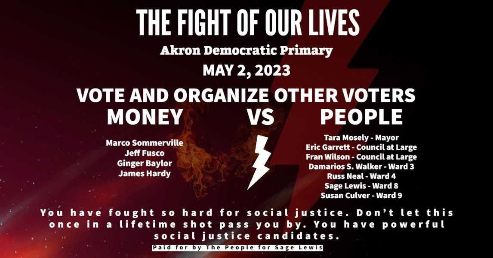

Timeline photos
PLEASE HEAR WHAT I'M GOING TO SAY:
The people on the left of this list have had their campaigns FLOODED with donations from rich corporate donors. They are desperately trying to hold on to power and keep it away from you, the regular people of Akron.
The people on the right are hardcore warriors for justice, equity and inclusivity for ALL PEOPLE. They are the manifestation of all the protests and uprisings over the last several years.
The people on the left are hoarders of resources and believe the people are too stupid to govern themselves. You, nature, water... they are all just commodities for these rich people to exploit to make more money for themselves.
If the people on the right win I GUARANTEE you are going to see a bright, positive future for Akron.
If the people on the left win I GUARANTEE nothing is going to change. The rich are going to get richer. Poor people are going to continue to be evicted at the highest rate in the state, young people are going to be pushed further away from having a seat at the table. Crime will get worse. Addiction will get worse. Income inequality will drive more crime and violence.
These people on the left are picking the meat off the carcass of a dying city. And when there's nothing left they will retire into the sunset to leave you with nothing. Just a dystopian hellscape from which you will be too poor to escape.
FOR ALL THAT IS GOOD WITH THE WORLD, PLEASE VOTE ON MAY 2. And start thinking now about who else you can get to come to the ballot box on May 2.
5 PEOPLE. Make a list of 5 people you can get to vote on May 2.
THERE ARE ONLY 2 WAYS CHANGE HAPPENS: At the end of a barrel of a gun or at the ballot box.
If you don't vote or you don't fight to get people to vote there is only one option left. And look around, there are a lot of radicals on both sides of the political spectrum that would rather have the violent revolution.
Things are getting bad in America and Akron.
The people on the left of the list will make it worse. The people on the right of the list will make it better. THAT'S A COLD HARD FACT.
PLEASE VOTE MAY 2.
#sageforakron8